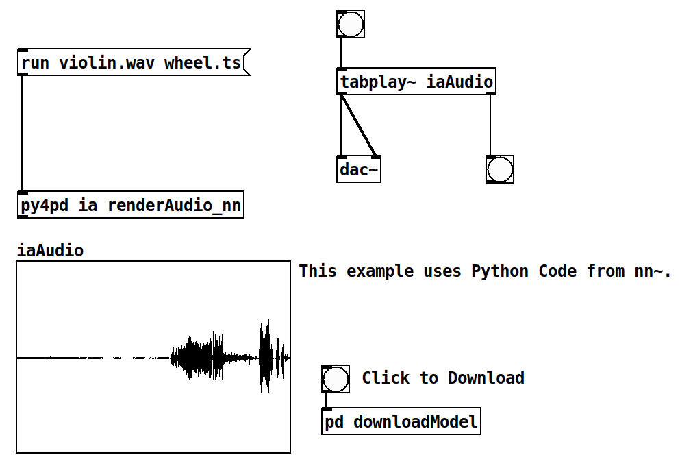

Introduction
Welcome to the py4pd documentation!


What is py4pd?
py4pd bridges the capabilities of OpenMusic with the versatility of PureData. If you're familiar with OpenMusic and BachLibrary, you'll discover a fresh source of inspiration here.
We achieve this by using Python instead of OpenMusic's Common Lisp, unlocking a vast array of powerful tools developed by composers and artists. This approach makes it easier to create music while seamlessly integrating extra code when needed.
PureData User
Python User
-
Hello World
-
Creating Libraries
How to install?
To check how to install go to Installation.
Examples and Use Cases
Here are presented tools implemented with py4pd. Users are encouraged to contribute their examples through Github .
With py4pd, you can train an AI using Pd, an share ways to train with composers, students, and others.
It is easy to use AI with py4pd. There are already powerful objects for real-time, like nn~ and ddsp~, but they are designed to specify approaches. Below is an example using py4pd and the Python code used by nn~ (offline processing).

Python Code
To illustrate the statement "Python offers a more accessible and user-friendly alternative than C and C++", presented earlier, here is an example of Python code:
import pd # py4pd library
import torch # Library of AI
import librosa # Library to load audios in Python
def renderAudio_nn(audio, model):
model = pd.get_patch_dir() + '/' + model # get the pathname of model.ts, which is the result of the IA trained.
audio = pd.get_patch_dir() + '/' + audio # The audio source
torch.set_grad_enabled(False) # config of the IA
model = torch.jit.load(model).eval() # Load model of IA
x = librosa.load(audio)[0] # take the audio samples of the sound (audio)
x_for = torch.from_numpy(x).reshape(1, 1, -1) # transform the audio to fit in the IA model
z = model.encode(x_for) # the black box
z[:, 0] += torch.linspace(-2, 2, z.shape[-1]) # No idea;
y = model.decode(z).numpy().reshape(-1) # Now we have sound again!
pd.tabwrite('iaAudio', y.tolist(), resize=True) # Here we write the sound in the table 'iaAudio'.
pd.print('Audio rendered')
Pieces where I use it
Ideias Roubadas III is a work inspired by the proposal of the UPIC system, developed by Iannis Xenakis in collaboration with the Centre d'Etudes de Mathématique et Automatique Musicales (CEMAMu) in Paris. Like UPIC, this piece employs an approach that manipulates visual elements to generate music using PureData to render the audio. I employ the concept of instruments (inspired by Csound) to render the sounds. Each color represents a sound or a set of instructions for spacialization, envelope, and others.
Eco (2023) is the first version of one under-developing piece that uses some concepts of the composer Ricardo Thomasi in his PhD research. The idea here is to use smartphones/tablets put in the performance music stand, to make real-time FFT and Partial Tracking and then, generate scores that are played. The smartphones/tablets send data to PureData, and using py4pd, we generate real-time scores using neoscore.
The piece Moteto aims to be a rereading of a medieval motet. In addition, to overlapping independent voices, we use Just Intonation structures. With the help of technology, I aim to make the piece playable, also by amateur choirs, it is available on this website: www.charlesneimog.com/moteto/.